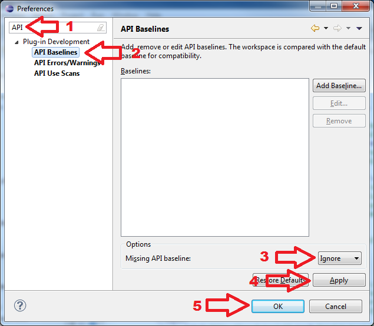
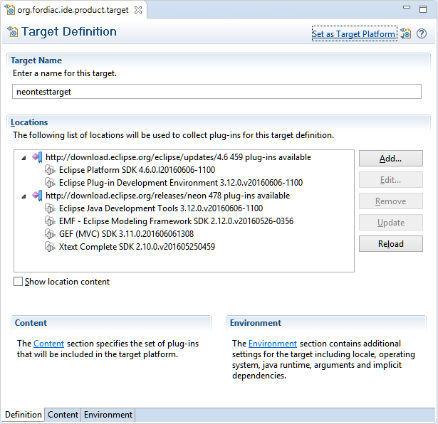
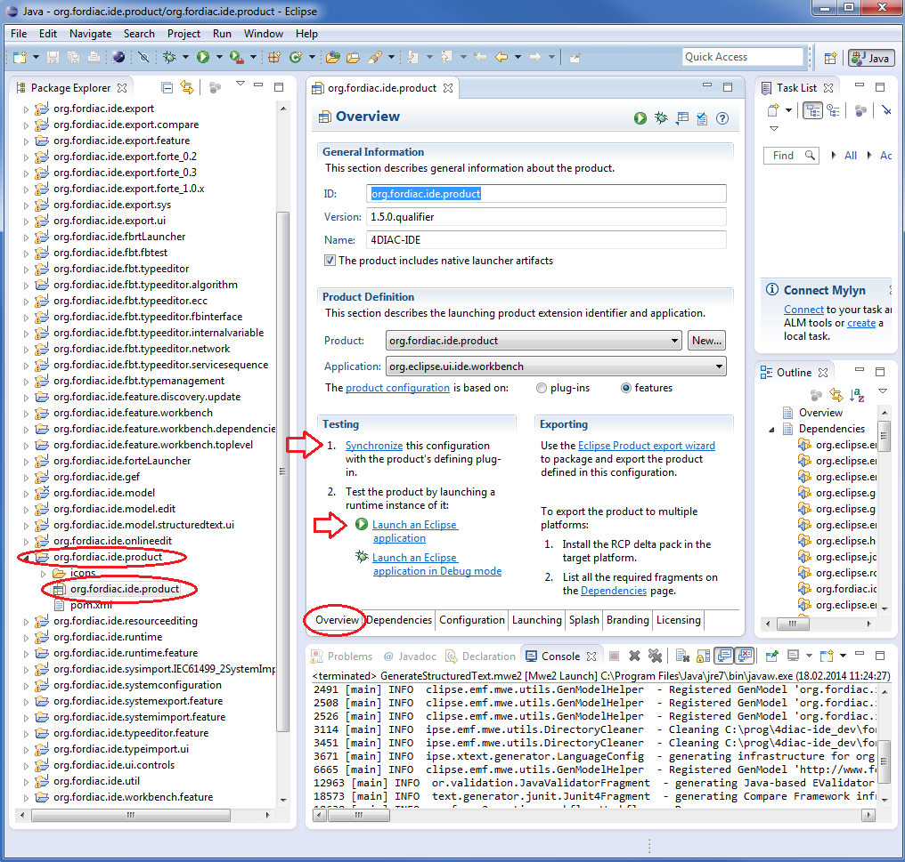

Building and Running 4diac IDE
You have 2 options for building and running 4diac IDE:
- Building and Running 4diac IDE from Source
- Building a Binary 4diac IDE Package from Source
Building and Running 4diac IDE from Source
Run through the following steps to build and execute the 4diac IDE from source:
- Get the development environment
- Check out the 4diac IDE repository
- Import plug-ins into workspace
- Set the target platform
- Run in development mode
Get the Development Environment
Get the latest Eclipse IDE.
Use Eclipse Modeling Tools edition.
Check out the 4diac IDE Repository
This section shows how to check out (clone) the 4diac IDE repository.
You will need Git to download it by using the clone command from Git to the repository https://git.eclipse.org/r/4diac/org.eclipse.4diac.ide.
If you're using the terminal, do:
$ cd ~
$ git clone https://git.eclipse.org/r/4diac/org.eclipse.4diac.ide
The code will be copied to the new created folder ~/org.eclipse.4diac.ide.
You can also use the git integrated into Eclipse for this process. Please refere to the Eclipse EGit documentation on how to clone a repository
Import Plug-Ins into Workspace
- Under select the source directory from the file system and mark all projects to be imported.
- Wait till Eclipse finished building the project (look at the progress bar at the right bottom corner of the Eclipse main window)
- Check problems view for errors. If you get API Baseline not set errors you need to perform the following steps:
- Open the Eclipse preferences:
- Enter API in the top left search field. You should get three research results: 1. API Baselines, 2. API Errors/Warnings, and 3. API Use Scans
- You now have two options:
- Set an API Baseline for your developments:
- Select: API Baseline
- Click Add Baseline ...
- Enter a name, e.g., MyEclipse
- For the location select your Eclipse directory
- Press Finish
- Select your new baseline in the API Baselines window and press OK
- Set the API Baseline error to ignore:
- Select: API Baseline
- Set the option Missing API Baseline: which can be found in the bottom of the preferences window from Error to Ignore

- Open the Eclipse preferences within the org.eclipse.fordiac.ide.product plugin:

- Wait until the target platform is resolved or press Reload and wait until it is resolved
- Press Set as Target Platform within the upper right corner and wait until the workspace is builded.
Run in Development Mode
- Open the org.eclipse.fordiac.ide.product from the org.eclipse.fordiac.ide.product plug-in.

- In the Section of the Overview tab press Synchronize
- To use 4diac IDE directly under this (development) Eclipse you need a type library and templates.
Both are part of the 4diac IDE repository and can be found in the data directory.
In order that your development 4diac IDE can find this they have to put into the directory where the target platform is stored.
For that copy the template and the typelibrary directory into the
.metadata/.plugins/org.eclipse.pde.core/.bundle_pool directory.
- Press Launch an Eclipse Application in the Overview
Building your own 4diac IDE
A big drawback for running 4diac IDE from source is that you need at least 2 Eclipse instances running.
Especially on systems with little memory this can be an issue.
If you still want to keep up with the developments performed in the Git repository it makes sense to build a binary package.
See Building a binary 4diac IDE package from source for details on how this can be achieved.
Go to top
Building a Binary 4diac IDE Package from Source
For building a binary 4diac IDE package from the source code the best is to use the Maven configuration which is also used to build 4diac IDE on our build server.
A modern Eclipse IDE comes with Maven integration out of the box.
Then the necessary steps for generating binary 4diac IDE packages are:
- Have the 4diac IDE source code in an Eclipse workspace as described in Building and Running 4diac IDE from Source
- Go to the root plugin org.eclipse.fordiac.ide and right-click on the pom.xml
- Invoke the .
- After a successful build you will find the output in plugins/org.eclipse.fordiac.ide.product/target/products directory.
Alternatively you can run on the command line in the root folder of 4diac IDE source code.
Where to go from here?
Go back to Development index:
Development Index
If you want to go back to the Start Here page, we leave you here a fast access
Start Here page
Or Go to top